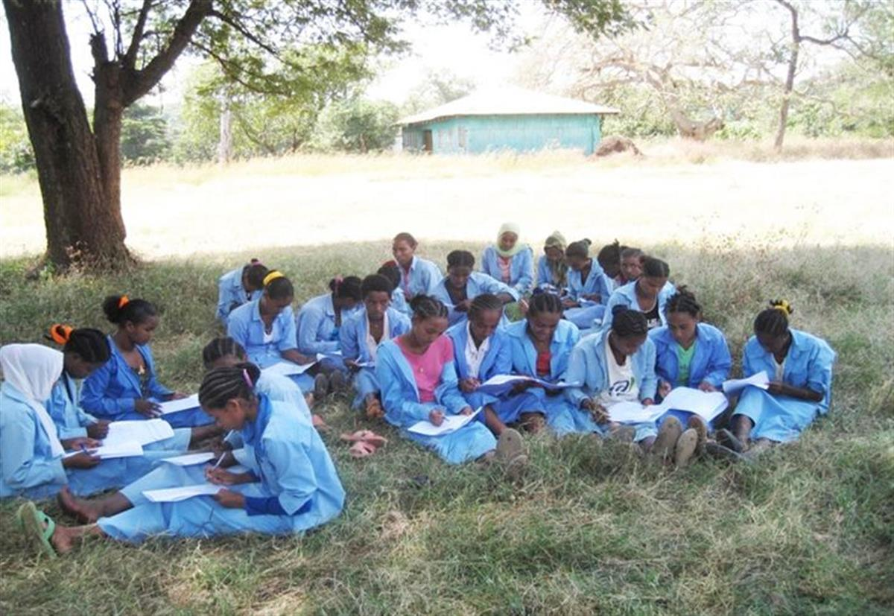

Preamble This Agenda is a plan of action for people, planet and prosperity. It also seeks to strengthen universal peace in larger freedom. We recognise that eradicating poverty in all its forms and dimensions, including extreme poverty, is the greatest global challenge and an indispensable requirement for sustainable development. All countries and all stakeholders, acting in collaborative partnership, will implement this plan. We are resolved to free the human race from the tyranny of poverty and want and to heal and secure our planet. We are determined to take the bold and transformative steps which are urgently needed to shift the world onto a sustainable and resilient path. As we embark on this collective journey, we pledge that no one will be left behind. The 17 Sustainable Development Goals and 169 targets which we are announcing today demonstrate the scale and ambition of this new universal Agenda. They seek to build on the Millennium Development Goals and complete what these did not achieve. They seek to realize the human rights of all and to achieve gender equality and the empowerment of all women and girls. They are integrated and indivisible and balance the three dimensions of sustainable development: the economic, social and environmental. The Goals and targets will stimulate action over the next fifteen years in areas of critical importance for humanity and the planet:
People We are determined to end poverty and hunger, in all their forms and dimensions, and to ensure that all human beings can fulfil their potential in dignity and equality and in a healthy environment.
Planet We are determined to protect the planet from degradation, including through sustainable consumption and production, sustainably managing its natural resources and taking urgent action on climate change, so that it can support the needs of the present and future generations.
Prosperity We are determined to ensure that all human beings can enjoy prosperous and fulfilling lives and that economic, social and technological progress occurs in harmony with nature.
Peace We are determined to foster peaceful, just and inclusive societies which are free from fear and violence. There can be no sustainable development without peace and no peace without sustainable development.
Partnership We are determined to mobilize the means required to implement this Agenda through a revitalised Global Partnership for Sustainable Development, based on a spirit of strengthened global solidarity, focussed in particular on the needs of the poorest and most vulnerable and with the participation of all countries, all stakeholders and all people. The interlinkages and integrated nature of the Sustainable Development Goals are of crucial importance in ensuring that the purpose of the new Agenda is realised. If we realize our ambitions across the full extent of the Agenda, the lives of all will be profoundly improved and our world will be transformed for the better.

SOURCE: UNITED NATIONS SUSTAINABLE DEVELOPMENT KNOWLEDGE PLATFORM